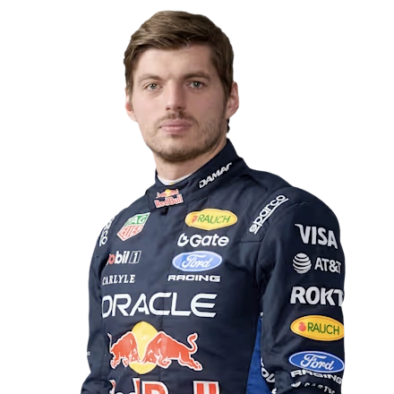
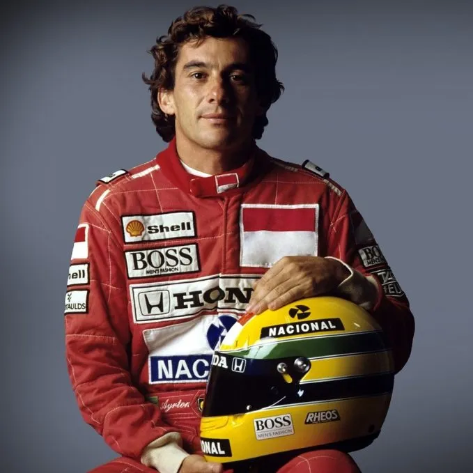

Scuderia Ferrari
El único equipo que ha corrido en todas las temporadas del Mundial desde 1950. Su color rosso corsa es sinónimo de la propia Fórmula 1.
16Títulos de constructores
15Títulos de pilotos
Desde 1950 hasta hoy
Un repaso a la historia de la Fórmula 1, sus escuderías más laureadas y las cifras de tres pilotos que redefinieron el deporte.
Bajar al pit lane ↓Cronología
La categoría nació como un campeonato de siete carreras en Europa y hoy es un espectáculo global. Esta línea de tiempo marca los giros más importantes de su historia.
El 13 de mayo se corre el primer Gran Premio del Campeonato Mundial de Pilotos, en Silverstone, Inglaterra. Giuseppe Farina, con Alfa Romeo, se convierte en el primer campeón de la historia.
Los equipos británicos popularizan el motor trasero-central, más ligero y aerodinámico. Lotus, con Colin Chapman, empieza a dominar gracias a la innovación técnica más que a la potencia bruta.
Los motores turboalimentados superan los 1.000 caballos de fuerza en clasificación. Es también la década de la fibra de carbono y de rivalidades históricas como la de Senna y Prost.
Tras el trágico fin de semana de Imola en 1994, la seguridad se vuelve prioridad. En ese mismo año, un joven Michael Schumacher gana su primer título y empieza a construir una dinastía.
Schumacher y Ferrari ganan cinco campeonatos consecutivos, una de las rachas más dominantes del deporte, apoyada en un equipo técnico liderado por Ross Brawn y Rory Byrne.
La F1 introduce motores turbo V6 híbridos, mucho más eficientes. Mercedes entiende mejor que nadie el nuevo reglamento y comienza un ciclo de dominio con Lewis Hamilton como su gran figura.
Tras un final de temporada 2021 histórico, Max Verstappen y Red Bull Racing toman el relevo de Mercedes y encadenan cuatro títulos de pilotos consecutivos.
Nuevos talentos pelean por el título mientras la F1 vive un boom global de audiencia, impulsado por más carreras, más ciudades y más historias fuera de la pista.
Los equipos
Detrás de cada piloto hay cientos de personas: ingenieros, mecánicos y estrategas. Estas son cuatro de las escuderías más importantes en la historia de la categoría.
El único equipo que ha corrido en todas las temporadas del Mundial desde 1950. Su color rosso corsa es sinónimo de la propia Fórmula 1.
Dominó la era híbrida a partir de 2014 con Lewis Hamilton, encadenando ocho títulos de constructores consecutivos entre 2014 y 2021.
Nacida de la antigua escudería Jaguar, se convirtió en potencia con Sebastian Vettel primero y en un imperio con Max Verstappen después.
Por su fábrica han pasado leyendas como Senna, Prost, Häkkinen y Hamilton. Tras años difíciles, volvió a pelear por el título en 2024.
Fundada por Frank Williams, fue una potencia dominante en los años 80 y 90, con motores Honda y Renault y pilotos como Nigel Mansell y Ayrton Senna en sus filas.
Tablero de tiempos
Estas son las cifras de carrera de cuatro de los pilotos más relevantes de la historia de la F1, cada uno dominando su propia época del deporte.
 1
1
Benetton · Ferrari (1991–2012)
Redefinió la profesionalización del piloto de F1: preparación física, trabajo con ingenieros y una mentalidad ganadora que Ferrari no conocía desde los años 70.
 2
2
McLaren · Mercedes · Ferrari (2007–act.)
El piloto con más victorias, podios y poles de la historia. Ganó seis de sus siete títulos con Mercedes durante la dominante era híbrida.

3Toro Rosso · Red Bull Racing (2015–act.)
Debutó a los 17 años y se convirtió en el campeón más joven de la historia en 2021. Sus cuatro títulos consecutivos marcan la era más reciente del deporte.

4Toleman · Lotus · McLaren · Williams (1984–1994)
Ícono absoluto del deporte, recordado por su velocidad sobre una vuelta y su manejo bajo lluvia. Su rivalidad con Alain Prost marcó una época. Falleció en 1994 corriendo para Williams.
Cifras de carrera acumuladas hasta el inicio de la temporada 2026.